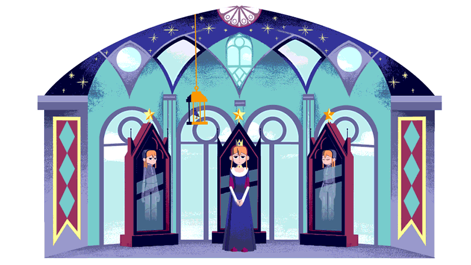
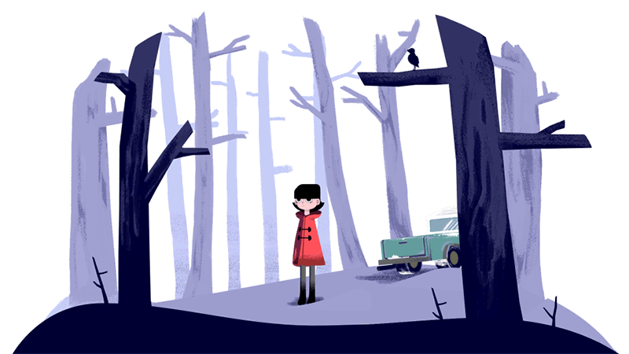
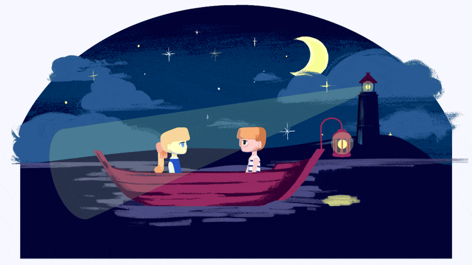
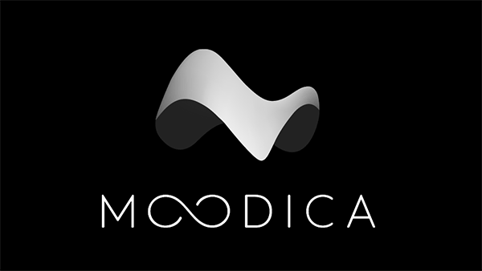
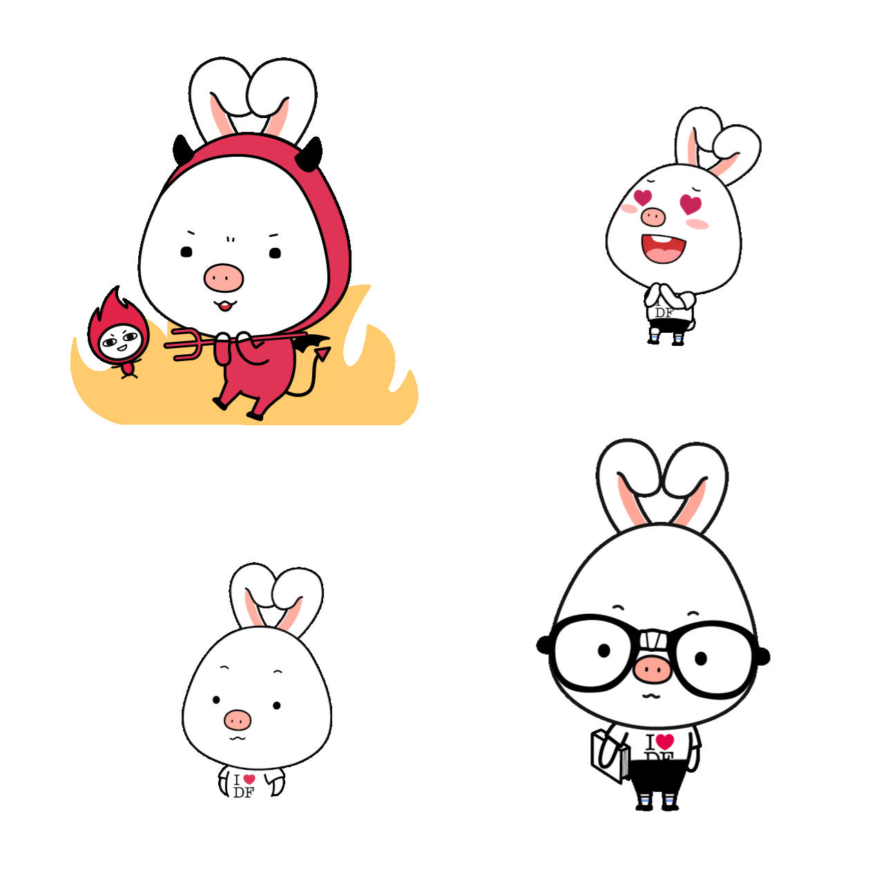

Motion Design / 2D & 3D
Motion Pictures
A collection of motion-graphics projects made as creative exploration and for work. Tools of choice include After Effects, Photoshop, and Maya.
Looping animation vignettes
A set of three illustrated and animated vignettes, inspired by Google Doodles and their use of the logo as a self-contained storytelling space. 3D was used for moving objects and characters, while 2D illustration established the visual style and tone.



Logo reveal explorations
These explorations highlight the three-dimensional, spatial shape of a logo and connect the wordmark to its icon through motion. Brand identity by Konrad Klinkner, 2016.

Character animations
Created with a team of illustrators and designers for a DramaFever iMessage sticker pack featuring the company mascot, Pig Rabbit. Character design by Hyunji Kim; select illustrations by Dana Gill.

Motion reel
A 2020 motion reel featuring a selection of animation work.